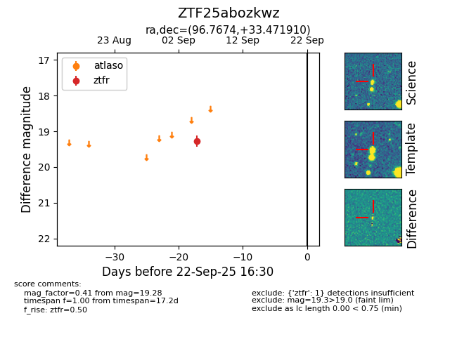

FINK: ZTF25abozkwz
Lasair: ZTF25abozkwz
ALeRCE: ZTF25abozkwz
ZTF25abozkwz (ztf,fink)
equatorial (ra, dec) = (96.7674,+33.47191)
galactic (l, b) = (180.2943,+9.94486)

last ztfr=19.28
1 ztfr detections